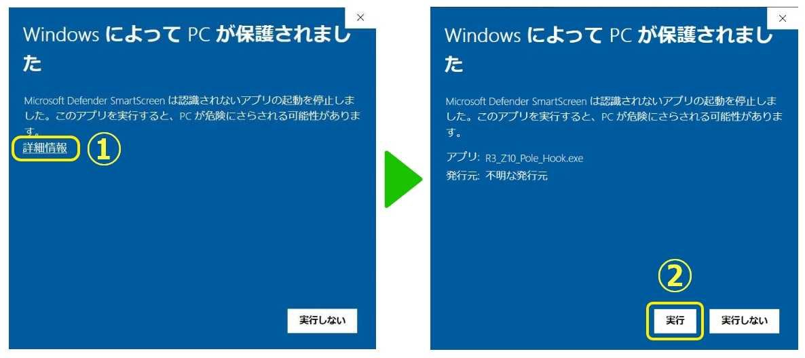

- こちら（78.7MB）をクリックしてダウンロードします
- ダウンロードされたZIPファイルを解凍します
- 解凍後、生成されたフォルダの中のexeファイルを実行すると遊ぶことができます
プレイが終わりましたら、ページ下部のアンケートボタンからご回答お願いします
※Windowの環境でのみプレイ可能ですが、Windowsでも特定の環境でプレイできないことを確認しています
※音量に注意!! 音量10%でのプレイを推奨します
WindowsによってPCが保護されましたという青い画面が出た場合の対処方法
